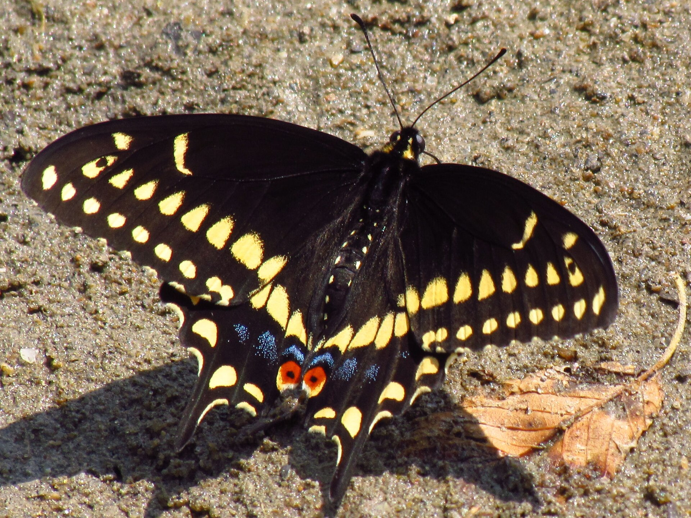
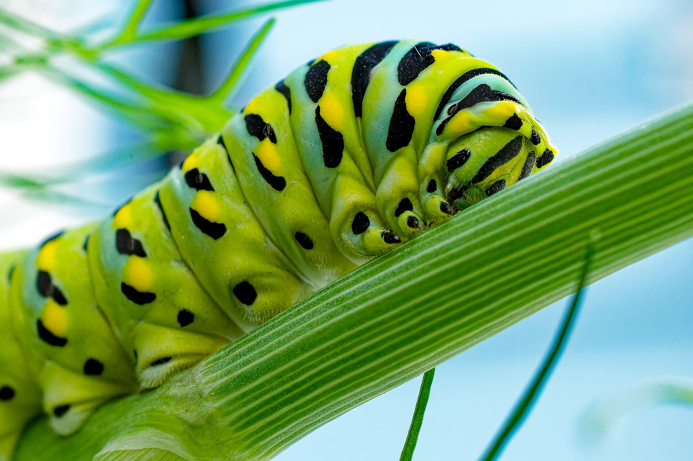

Papilio polyxenes
PossibleFennel, parsley, and dill in the garden. Still in season through November. Quieter on iNaturalist this August than the Giants, but a regular yard resident.

Yards, weedy lots, canal edges.
Sweet fennel
Foeniculum vulgareParsley
Petroselinum crispumDill / carrot / celery
Anethum graveolens / Daucus carota / Apium graveolensMock bishopweed
Ptilimnium capillaceumSpicebush (not a first-ship regular). Female can look dark; check the orange-centered hindwing spot.